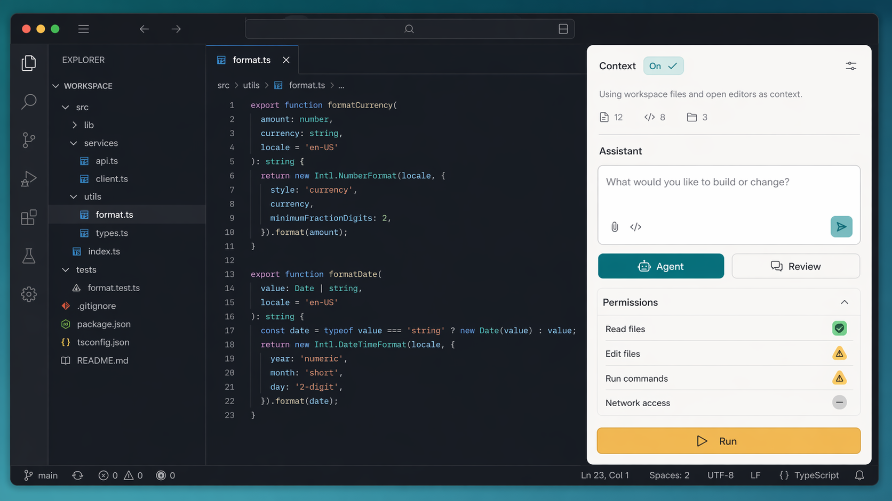
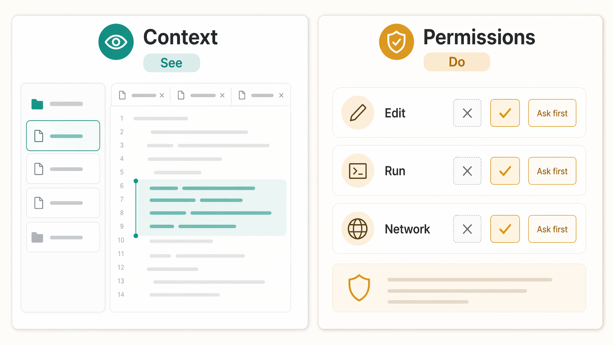
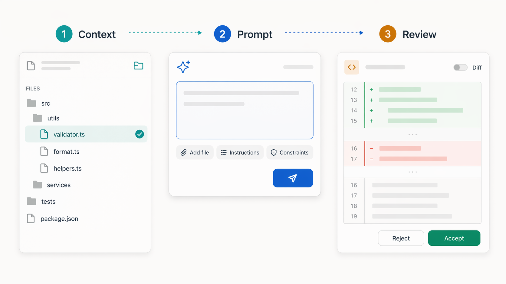

Codex IDE guide
How to Use Codex in VS Code: Chat vs Agent, IDE Context, and Full Access
If you are staring at Include IDE context, Chat, Agent, or Agent Full Access and wondering what is safe to click, this guide is for you. IDE context affects what Codex can see. The mode you choose affects what Codex can do.

Quick Answer
Codex is like a coding helper sitting next to your editor. You can ask it to explain code, suggest changes, edit files, or run checks. The important part is knowing which setting controls which kind of help.
Use Chat when you want advice or a plan. Use Agent when you want Codex to make a small change. Save Agent Full Access for work you already understand and trust.
If you only remember one thing, remember this: context is not permission. Giving Codex better context does not mean you have to give it full access.
Super Simple Version
What Codex Can See
IDE context is like showing Codex the page you are looking at. It helps Codex understand your question.
What Codex Can Do
Agent mode is when Codex can actually work on files and run useful checks in your project.
When Codex Should Ask
Full Access reduces interruptions. That is powerful, so beginners should use it only after they understand the task.
Tiny Glossary
If the words in Codex feel a bit technical, start here. These are the plain-English meanings you need before using the rest of the guide.
IDE
Your code editor, such as VS Code, Cursor, or Windsurf.
Context
The files, selected code, and editor state Codex can use to understand you.
Diff
The before-and-after view that shows exactly what Codex changed.
Agent
A mode where Codex can do work in your project instead of only chatting.
Full Access
A more powerful mode with fewer approval prompts. Use it carefully.
Network Access
Permission for commands to use the internet, such as downloading packages.
What Codex in VS Code Is
Codex is OpenAI's coding agent. In the IDE extension, it works beside your code editor. That means you can ask questions about the current project without copying and pasting whole files into a separate chat.
A normal Codex session might look like this: ask what a file does, ask for a plan, let Codex make one small edit, then look at the diff to check what changed.
The name "VS Code" is the search term most people use, but the official Codex IDE extension also supports VS Code forks like Cursor and Windsurf. OpenAI's docs also mention Codex IDE integrations for VS Code-compatible editors and JetBrains IDEs on macOS, Windows, and Linux.
Ask Questions
Use Codex like a project-aware reviewer when you need to understand a file.
Make Small Edits
Let Codex change focused code paths, then inspect the diff before moving on.
Run Checks
For suitable tasks, Codex can run commands such as tests or formatters.
Delegate Larger Work
For longer jobs, Codex can hand work to cloud tasks when your setup supports it.
Quick Setup
The basic setup is short. Install the Codex extension, sign in, open your project, and start with a low-risk question before asking Codex to edit anything.
1. Install the Extension
Use the Codex extension for VS Code, Cursor, Windsurf, or another supported editor. Restart the editor if Codex does not appear right away.
2. Open the Project Folder
Open the actual folder you want Codex to understand. A single focused workspace is easier for Codex to reason about than a messy editor state.
3. Start in Chat
Ask Codex to explain the current file before giving it a task. That shows you whether the right context is being used.
4. Move to Agent
Once the plan makes sense, switch to Agent for a small edit and review the diff before accepting it.
How IDE Context Works
IDE context is the bridge between "answer from general knowledge" and "answer using this project." It can help Codex use the files you have open, the current file, selected code, and explicit file references so your prompt can be shorter and more precise.
If the Codex app and IDE extension are synced in the same project, OpenAI says the app can show an IDE context option. With Auto context enabled, Codex tracks files you are viewing so you can ask indirect questions such as "what is this file doing?"
For a deeper plain-English explanation of the toggle itself, read what the IDE context button means in Codex. The short version is that context helps Codex understand your editor state; it is not the same thing as permission to act.

| Context source | When it helps | What to say in the prompt |
|---|---|---|
| Open file | You want Codex to explain or change the file currently in front of you. | "Use the current file as context." |
| Selected code | You want a focused explanation, bug fix, or refactor for one block. | "Use the selected code only unless you need surrounding context." |
| @file reference | You know the exact file Codex should inspect, even if it is not open. | "Use @filename as the source of truth." |
Chat vs Agent vs Agent Full Access
The mode switcher matters because each mode carries a different level of autonomy. If you are new to Codex, start with the least powerful mode that can still do the job.
| Mode | Best for | What to watch |
|---|---|---|
| Chat | Explaining code, planning changes, comparing approaches, and reviewing before edits. | It is slower for hands-on work, but safer when you are still deciding what should happen. |
| Agent | Focused work inside the current project, such as editing files and running local checks. | OpenAI says Agent can read files, make edits, and run commands in the working directory automatically. |
| Agent Full Access | Trusted tasks that need network access or fewer approval interruptions. | Use caution. OpenAI describes it as allowing file reads, edits, commands, and network access without approval. |
My practical advice: use Chat to shape the job, Agent to do the job, and Agent Full Access only when the repo, the task, and the commands are all familiar enough that you would be comfortable doing them yourself.
A Safe First Workflow
You do not need an advanced setup to get value from Codex. The first workflow to learn is a small loop: give the right context, ask for a focused change, then review the output before accepting it.

1. Open the Right File
Start with the file you actually want to discuss. Close unrelated tabs if they could distract the task.
2. Ask in Chat First
Before editing, ask Codex to explain the file, risks, and likely change path.
3. Switch to Agent
Ask for one focused change. Keep the instruction narrow and name the success check you expect.
4. Review the Diff
Read the changed code, run a check if possible, and ask Codex to explain any part that feels surprising.
Prompts That Work Well
Codex works better when you give it the task, the boundary, and the check. These prompts are intentionally plain. They tell Codex what to do without turning the request into a novel.
Understand the Current File
"Use IDE context. Explain what this file is responsible for, what imports matter, and what I should be careful about before changing it."
Plan Before Editing
"Stay in Chat mode for now. Plan the smallest safe change for [goal]. Tell me which files you would inspect before editing."
Make a Focused Change
"Use Agent mode. Change only the files required for [goal]. Keep behavior the same except for [specific change], then tell me what you checked."
Review a Diff
"Review the current diff for bugs, accidental behavior changes, and missing edge cases. Give findings first, then a short summary."
Run Tests Carefully
"Run the smallest relevant test or check for this change. If a command might be slow, destructive, or network-dependent, explain before running it."
Use Full Access Deliberately
"Before I switch to Agent Full Access, list exactly why this task needs it, what commands you expect to run, and what risk I should understand."
| Weak prompt | Better Codex prompt |
|---|---|
| "Fix this." | "Use IDE context. Find the smallest safe fix for this error. Explain the cause first, then change only the files required." |
| "Make this cleaner." | "Refactor the selected function for readability without changing behavior. Keep the public API the same and tell me what you checked." |
| "Build the feature." | "Plan the feature in Chat first. List the files you need to inspect, the smallest implementation path, and the test I should run before editing." |
| "Run everything." | "Run the smallest relevant check for this change. If the command needs the network, changes files, or may take a long time, ask first." |
Copy This First Codex Session
If you are using Codex for the first time, run this as a three-message session. It gives you the benefits of context and Agent mode without jumping straight into a risky broad edit.
Message 1: Understand
Use IDE context. Explain the current file in plain English. What is it responsible for, what does it depend on, and what should I be careful about before editing it?
Message 2: Plan
Stay in Chat mode. Plan the smallest safe change for [describe your goal]. Name the files you would inspect and tell me what check would prove the change worked.
Message 3: Edit
Switch to Agent mode. Make only the planned change. Do not refactor unrelated code. After editing, summarize the diff and tell me the exact check you ran or recommend.
Troubleshooting
Codex Talks About the Wrong File
Open the correct file, name it in the prompt, and remove unrelated editor context. If needed, use an explicit file reference.
Codex Wants Too Much Access
Keep the task in Chat or normal Agent mode and ask it to explain which action actually needs extra permission.
The Change Is Too Big
Stop and ask for a smaller plan. A good instruction is: "Make the smallest change that solves this, and do not refactor unrelated code."
You Do Not Trust the Output Yet
Ask Codex to explain the diff line by line, then run a focused check. If the explanation is vague, do not accept the change blindly.
What I Would Use Most Often
For everyday coding, I would live mostly in two modes: Chat for thinking, Agent for small edits. That gives you the real benefit of Codex without letting every question become an uncontrolled code change.
Full Access has its place, but it should feel like a deliberate decision. Use it when the task genuinely needs fewer prompts or network access, not just because it sounds more powerful.
Use Chat When
You are exploring, learning a file, comparing approaches, or checking risk.
Use Agent When
You know the change you want and can review the diff afterward.
Use Full Access When
The task is trusted, scoped, and genuinely needs network access or fewer prompts.
Pause When
The task touches secrets, payments, production data, or commands you do not understand.
FAQ
Does Codex only work in VS Code?
No. OpenAI's Codex IDE docs say the extension works with VS Code forks like Cursor and Windsurf, and that Codex IDE integrations are available for VS Code-compatible editors and JetBrains IDEs.
What does Include IDE context mean in Codex?
It means Codex can use relevant editor context, such as the current file, open files, selected code, or explicit file references, to answer with more awareness of your project.
Is IDE context the same as Full Access?
No. IDE context helps Codex understand your current files. Full Access changes how much Codex can do without approval, including commands and network access.
Can Codex change files automatically in Agent mode?
Yes, for normal work inside the current project. That is why the best habit is to ask for a small change, review the diff, and run a focused check before accepting the result.
Should beginners use Agent Full Access?
Usually not at first. Learn Chat and Agent mode first, then use Full Access only for trusted projects and tasks where the extra autonomy is clearly needed.
What is the best first Codex prompt?
Try this: "Use IDE context. Explain the current file, what it depends on, and the safest way to make a small change." It teaches you how much context Codex can see before you ask it to edit anything.
Sources Checked
This guide was written from first-hand Codex use and checked against current official OpenAI documentation on 24 April 2026.